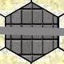
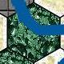

| TERRAIN FEATURE | | Movement Points to Enter/Cross | Effect on Combat Factor of Defending unit | Allowed units |
| Clear | | 1 MF | Basic | All Units |
| City |  | 1/3 MF | Doubled | All Units |
| River | | 3 MF | Doubled | All Units |
| City/River | | 1/3 MF | Doubled | All Units |
| Forest | | 2 MF | Doubled | All except Armour and Mech |
| Forest/River |  | 3 MF | Doubled | All except Armour and Mech |
| Mountain | | 2 MF | Doubled | Special Forces only |
| Sea | | Not allowed | Not allowed | Special Forces only when invading |
| Beach | | 1 MF | Basic | All Units |
| Coastal | | 1 MF | Basic | All Units |
| Road | | 1/3 MF | Basic | All Units |
| Road/River | | 1/3 MF | Basic | All Units |